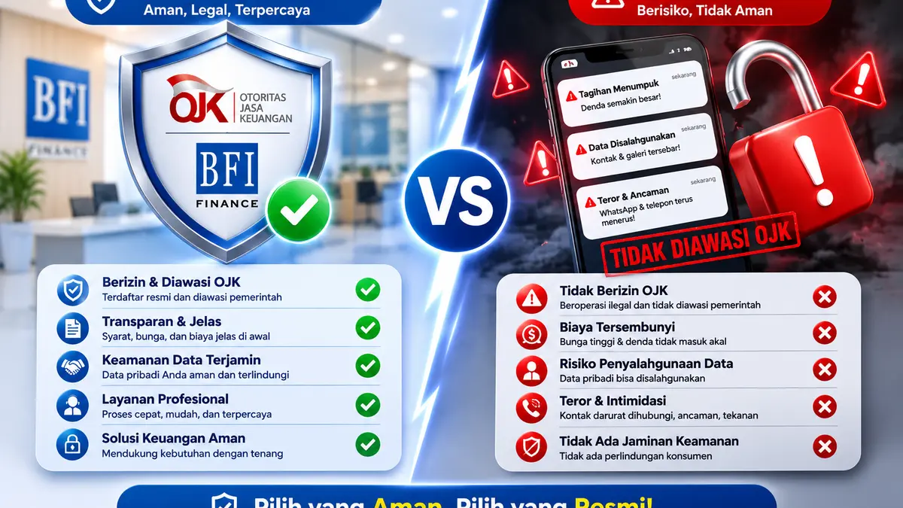
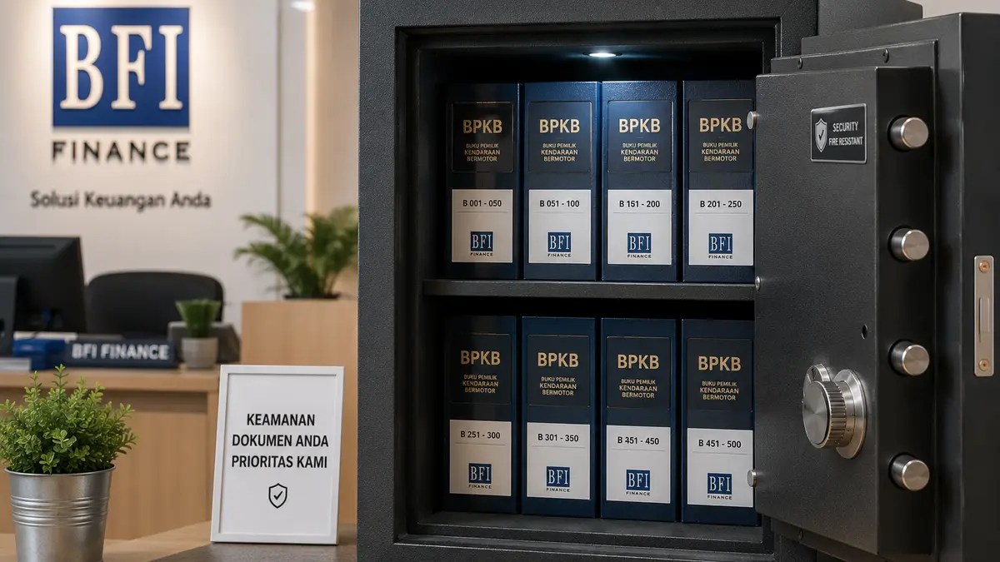

Ketika desakan finansial datang menyerang secara mendadak, banyak orang cenderung mengambil keputusan kilat tanpa melakukan kalkulasi matang. Di era digital saat ini, dua opsi yang paling sering muncul di benak masyarakat adalah mengunduh aplikasi Pinjaman Online (Pinjol) atau mengajukan pinjaman dengan tempat gadai bpkb resmi ojk.
Sekilas, pinjol menawarkan kepraktisan karena hanya bermodalkan KTP dan HP. Namun, di balik kemudahan instan tersebut, ada risiko bunga raksasa yang siap menggulung keuangan Anda. Mari kita bedah secara objektif mengapa menjaminkan BPKB mobil di multi-finance resmi seperti BFI Finance jauh lebih menguntungkan dan aman secara jangka panjang.
Perbandingan Riil: Gadai BPKB Mobil vs Pinjaman Online
Untuk memahami mengapa skema pembiayaan konvensional yang terintegrasi jauh lebih sehat, kita harus melihat perbedaan mendasar dari tiga faktor utama: Suku Bunga, Plafon Pencairan, dan Aspek Keamanan.
1. Suku Bunga: Hitungan Bulanan vs Hitungan Harian
Ini adalah poin paling krusial yang jarang disadari nasabah. Aplikasi pinjol umumnya menerapkan struktur bunga harian (misalkan 0,1% hingga 0,3% per hari). Jika diakumulasikan ke dalam satu bulan, bunga pinjol bisa mencapai 3% hingga 9%!
Sangat kontras dengan sistem bfi finance resmi ojk. Suku bunga yang ditawarkan untuk jaminan BPKB kendaraan dihitung secara tahunan (flat per bulan) yang rasionya jauh lebih rendah, mulai dari 0,6% hingga 1,5% per bulan saja. Dari kalkulasi matematika dasar ini, beban finansial Anda di leasing resmi jauh lebih ringan dan masuk akal.
2. Plafon Pencairan Dana
Aplikasi pinjol dibatasi oleh limit yang relatif kecil untuk pengguna baru, biasanya berkisar antara Rp500.000 hingga Rp10.000.000 saja. Jumlah ini tentu sangat tidak mencukupi jika kebutuhan dana Anda adalah untuk ekspansi modal bisnis, biaya kuliah anak, atau renovasi rumah besar.
Dengan melakukan gadai BPKB mobil, Anda bisa mencairkan dana segar mulai dari puluhan juta hingga ratusan juta rupiah (hingga 80% dari nilai taksiran harga pasar mobil Anda saat ini). Nilai guna aset kendaraan Anda benar-benar termaksimalkan.

3. Jangka Waktu (Tenor) Pelunasan yang Manusiawi
Pinjol memaksa nasabah mengembalikan dana dalam waktu yang sangat singkat, sering kali berkisar antara 30 hari hingga 90 hari saja. Tempo sesingkat ini kerap memicu stres tinggi karena siklus perputaran uang usaha belum selesai bergulir.
Di BFI Finance, Anda diberikan fleksibilitas untuk memilih tenor pelunasan yang longgar, mulai dari 12 bulan, 24 bulan, hingga 36 bulan. Anda bisa menyesuaikan besaran cicilan bulanan dengan arus pendapatan neto Anda tanpa perlu mengganggu stabilitas dapur rumah tangga.
Aman Mana Antara Pinjol atau Gadai BPKB Mobil?
Faktor keamanan psikologis dan data pribadi adalah kemenangan mutlak bagi sistem leasing resmi OJK. Mari kita lihat kenyataan di lapangan:
Aplikasi Pinjol (Berisiko): Saat Anda menginstal aplikasi pinjol, sistem mereka sering meminta izin akses kontak HP, galeri foto, dan lokasi. Jika terjadi keterlambatan pembayaran satu hari saja, risiko penyebaran data pribadi dan teror psikologis ke seluruh kontak keluarga sangat raksasa.
Leasing Resmi OJK (100% Aman): Lembaga seperti BFI Finance tunduk penuh pada aturan hukum ketat Otoritas Jasa Keuangan (OJK). Privasi data Anda dilindungi undang-undang. Sertifikat BPKB asli Anda disimpan di dalam brankas besi khusus (*Vault*) bersertifikat anti-kebakaran dan dijaga ketat 24 jam. Tidak akan ada penyalahgunaan data atau penagihan di luar koridor hukum.

Kendaraan Tetap Milik Anda: Keuntungan terbesar lainnya adalah mobil kesayangan Anda tidak ditahan di gudang kami! Yang kami simpan hanyalah berkas dokumen hukumnya saja (BPKB). Fisik mobil tetap berada di rumah Anda dan bisa terus digunakan untuk bekerja mencari nafkah seperti biasa.
Kesimpulan
Memilih jalan pintas melalui pinjaman online sering kali berujung pada masalah finansial yang lebih besar akibat bunga yang menggulung tiada henti. Jika Anda memiliki aset berupa mobil, memanfaatkan program gadai BPKB resmi di BFI Finance adalah opsi yang jauh lebih cerdas, hemat, dan memberikan ketenangan pikiran bagi keluarga Anda.